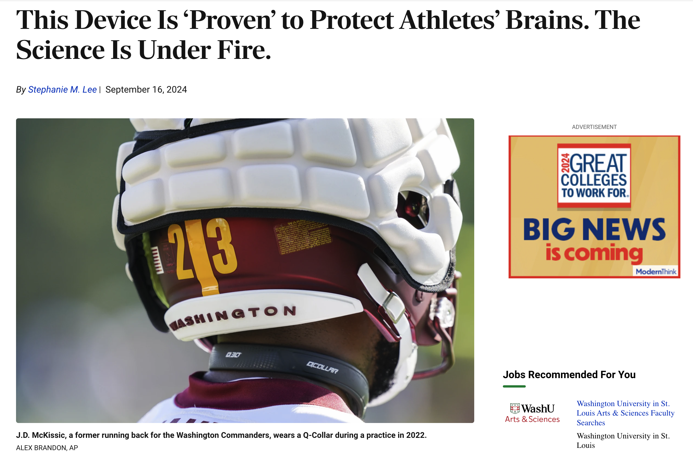

flowchart TD A[threat] --> B[perceived moral purity] B --> E[need to cleanse] E --> C[mental accessibility of cleansing-related concepts] E --> D[Greater desire for cleansing products] E --> F[Greater likelihood of taking antiseptic wipes]
Replication failure: The ‘Lady Macbeth Effect’
2024-09-18 Wed
Rick Gilmore
Prelude
Overview
Announcements
Important
This could be an interesting topic for a final project.
Last time…
Last time…
In principle, all reported evidence should be reproducible. If someone applies the same analysis to the same data, the same result should occur…
Important
Do you agree? Why or why not?
Today
Replication failure: The “Lady Macbeth Effect”
- Read & Discuss:
Does the “Lady Macbeth Effect” replicate?
Zhong, C.-B. & Liljenquist, K. (2006). Washing away your sins: Threatened morality and physical cleansing. Science, 313(5792), 1451–1452. https://doi.org/10.1126/science.1130726
Abstract
Physical cleansing has been a focal element in religious ceremonies for thousands of years. The prevalence of this practice suggests a psychological association between bodily purity and moral purity. In three studies, we explored what we call the “Macbeth effect”—that is, a threat to one’s moral purity induces the need to cleanse oneself…
This effect revealed itself through an increased mental accessibility of cleansing-related concepts, a greater desire for cleansing products, and a greater likelihood of taking antiseptic wipes. Furthermore, we showed that physical cleansing alleviates the upsetting consequences of unethical behavior and reduces threats to one’s moral self-image…
Daily hygiene routines such as washing hands, as simple and benign as they might seem, can deliver a powerful antidote to threatened morality, enabling people to truly wash away their sins.
From abstract
- (Zhong & Liljenquist, 2006)
- Who is audience?
- What question was explored?
- Need to cleanse
- “Increased mental accessibility of cleansing-related concepts”
- “Greater desire for cleansing products”
- “Greater likelihood of taking antiseptic wipes”
Important
What do the arrows imply?
Can we say more about what we think they imply?
What was observed and what was inferred? Or what were the behaviors and what were the internal mental states?
From methods section
- Not in main text!
- Look in Supplemental material
Important
Why would Science adopt this structure for papers?
Study 1
Participants. Sixty undergraduate students at Northwestern University participated in this study.
Design and Procedure. Participants were randomly assigned to the cells of a 2-level single factor (Recall: ethical vs. unethical), between-participants design. They were led to separate breakout rooms upon arrival and were told that the researcher was interested in studying the differences in memories associated with ethical or unethical behaviors…
In the ethical condition, participants were asked to describe in detail an ethical thing that they had done in the past and to describe any feelings or emotions they experienced. In the unethical condition, they were asked to describe an unethical deed and any emotions they experienced. This manipulation was adapted from a recall task in previous research (1)…
After the recall, participants engaged in a seemingly unrelated word completion task, in which they filled in blank spaces within word fragments to convert them into meaningful words. There were six word fragments, three of them (i.e., W _ _ H, SH _ _ ER, and S _ _ P) could be completed as either cleansing-related (i.e., wash, shower, and soap) or unrelated words (e.g., wish, shaker, and step)…
We summed the number of cleansing-related word fragments participants completed to form a composite measure of mental accessibility to cleansing-related concepts and submitted this measure to a one-way ANOVA. This measure and analysis have been used in many previous studies on mental accessibility (2, 3).
flowchart TD A(describe ethical/unethical deed) -->|+/-| B[perceived moral purity] B -->|-/+| E[need to cleanse] E -->|+/-| C[mental accessibility of cleansing-related concepts] C-->|+/-| D(cleansing/unrelated word completion task)
Study 1 results
Participants who recalled an unethical deed generated more cleansing-related words than those who recalled an ethical deed [F(1,58) = 4.26, P = 0.04], suggesting that unethical behavior enhances the accessibility of cleansing-related concepts.
Table 1 from (Zhong & Liljenquist, 2006)
In the Report Washing away your sins: threatened morality and physical cleansing, the SEM values for Study 1 were entered incorrectly in Table 1. For the effect of ethical recall, the value should be 0.188, not 1.88, and for the effect of unethical recall, the value should be 0.177, not 1.77. The authors gratefully acknowledge A. Brouwer, S.A. Koppes, L. Wolters, L.D.J. Kuijper, and C. Zonneveld for pointing out this error.
Important
What does an F-test test?
The hypothesis that the means of a given set of normally distributed populations, all having the same standard deviation, are equal. This is perhaps the best-known F-test, and plays an important role in the analysis of variance (ANOVA).
Source: Wikipedia: https://en.wikipedia.org/wiki/F-test
Study 2
Participants. Twenty-seven undergraduate students at Northwestern University participated in this study.
Design and Procedure. Participants were randomly assigned to the cells of a 2-level single factor (Prime: ethical versus unethical), between-participants design. They were led to individual breakout rooms upon arrival and engaged in multiple seemingly unrelated tasks. Instead of using the behavior recall task as in Study 1, we used an implicit manipulation for the ethical vs. unethical prime…
In this manipulation, participants hand copied a short story written in the first person. They were told that the researcher was interested in studying the association between handwriting and personality. Participants in the ethical prime condition hand-copied the following story about an honest office worker:
Two years ago, when I was a junior partner at a prestigious law firm, I was coming up for promotion against another junior partner, Chris. For several months, Chris had been working on a major case for the city that would make or break his career at the firm. However, he could not locate a key zoning document, without which, it was unlikely that he would have sufficient evidence to successfully argue his case…
Late one evening, as I was rummaging through a corner filing cabinet, I happened to come across the zoning document that Chris was in desperate need of. I pulled it from the cabinet and placed it without a note on Chris’ desk, knowing that he would be so relieved when he arrived to work the next morning.
Those in the unethical prime condition hand-copied the same story except that this time the office worker in the story decided to hide the critical document and sabotage the career of his or her competitor (the last sentence was replaced with, “I pulled it from the cabinet and walked over to the office shredder, knowing that my promotion would now be secured”).
After completing the hand-copying task, participants engaged in a marketing task and rated the desirability of various products on a seven-point scale (1 = completely undesirable, 7 = completely desirable). Some of the products were cleansing products, including Dove shower soap, Crest toothpaste, Windex cleaner, Lysol disinfectant, and Tide detergent; other products included Post-it Notes, Nantucket Nectars juice, Energizer batteries, Sony CD cases, and Snickers bars.
The desirability rating served as the dependent measure because participants who have a need for bodily cleansing should express greater desire towards cleansing related products. None of the participants suspected the link between the manipulation and the product rating task.
flowchart TD A(hand-copy story) -->|+/-| B[moral purity] B -->|-/+| E[need to cleanse] E -->|+/-| C[desire for cleansing prods] C -->|+/-| D(rate prod desirability)
Study 2 results
As expected, copying the unethical story increased the desirability of cleansing products as compared to copying the ethical story [F(1,25) = 6.99, P = 0.01], with no differences between conditions for the noncleansing products [F(1,25) = 0.02, P = 0.89] (Fig. 1).
Figure 1 from (Zhong & Liljenquist, 2006)
Note
Look at the scale of the figure. What do you notice?
Study 3
Participants. Thirty-two undergraduate students at Northwestern University participated in this study.
Design and Procedure. Participants were randomly assigned to the cells of a 2-level single factor (Recall: ethical vs. unethical), between-participants design. They were led to individual breakout rooms upon arrival and engaged in the same memory recall task (i.e., the ethical vs. unethical recall) as in Study 1.
They were then approached individually by the experimenter during the break and asked whether they would like to have an antiseptic cleansing wipe or an American pencil as a free gift (both items were visible in the experimenter’s hands). They were told that those materials were left over from a previous study and the experimenter would like to give them away as free gifts. Their choice between the pencil and wipe served as the dependent variable.
The gifts were tested to make sure that they were equally desirable on an independent sample with 15 undergraduate students. These participants went through a similar but non-moral recall task (unrelated to ethics or cleanliness) and were then asked to choose between the wipes and pencils. Results confirmed equal desirability: 53% took the wipe and 47% took the pencil.
flowchart TD A(describe past deed) -->|+/-| B[moral purity] B -->|-/+| E[need to cleanse] E -->|+/-| C[desire for cleansing prods] C -->|+/-| D(choose wipe or pencil)
Results Study 3
Those who recalled an unethical deed were more likely to take the antiseptic wipe (67%) than were those who recalled an ethical deed (33%) (χ2 = 4.57, P = 0.03) (Table 1).
Table 1 from (Zhong & Liljenquist, 2006)
Replication
Earp, B. D., Everett, J. A. C., Madva, E. N. & Hamlin, J. K. (2014). Out, Damned Spot: Can the “Macbeth Effect” Be Replicated? Basic and Applied Social Psychology, 36(1), 91–98. https://doi.org/10.1080/01973533.2013.856792
Zhong and Liljenquist (2006) reported evidence of a “Macbeth Effect” in social psychology: a threat to people’s moral purity leads them to seek, literally, to cleanse themselves. In an attempt to build upon these findings, we conducted a series of direct replications of Study 2 from Z&L’s seminal report.
We used Z&L’s original materials and methods, investigated samples that were more representative of the general population, investigated samples from different countries and cultures, and substantially increased the power of our statistical tests.
Despite multiple good-faith efforts, however, we were unable to detect a “Macbeth Effect” in any of our experiments. We discuss these findings in the context of recent concerns about replicability in the field of experimental social psychology.
From abstract (Earp et al., 2014)
- Type of paper: empirical|theoretical|review|opinion|empirical (partial replication)
- What question was explored?
- Who were participants?
- What were the participants’ characteristics?
- What measurements were taken? How often?
Study 1 method (Earp et al., 2014)
Participants in this study were 153 undergraduate students enrolled at a university in the United Kingdom. Participants were invited to take part via e-mail messages sent to departmental mailing lists and received a chocolate bar in exchange for their time.
In Part 1, participants were randomly assigned to one of two priming conditions: ethical or unethical. In Part 2, participants rated a number of consumer products for their desirability on a scale of 1 to 7. In an attempt to prevent participants’ drawing any connections between Parts 1 and 2, they were told that Parts 1 and 2 were two separate experiments.
Just as in Study 2 from Zhong and Liljenquist’s (2006) original report, participants were told they were taking part in an investigation into handwriting and personality and were asked to hand-copy a short story written in the first person. In the “unethical” condition, the paragraph described an unethical deed from the first-person perspective, as follows:
Two years ago, when I was a junior partner at a prestigious law firm, I was coming up for promotion against another junior partner, Chris. For several months, Chris had been working on a major case for the city that would make or break his career at the firm. However, he could not locate a key zoning document, without which, it was unlikely that he would have sufficient evidence to successfully argue his case.
Late one evening, as I was rummaging through a corner filing cabinet, I happened to come across the zoning document that Chris was in desperate need of. I pulled it from the cabinet and walked over to the office shredder, knowing that my promotion would now be secured.
In the “ethical” condition, the paragraph was exactly the same, except that the last sentence read: I pulled it from the cabinet and placed it without a note on Chris’ desk, knowing that he would be so relieved when he arrived to work the next morning.
Participants were then told that they were taking part in research looking at consumer marketing and were asked to rate the desirability of various products from 1 (completely undesirable) to 7 (completely desirable) and to say how much they would be willing to pay (£) for each product.
The 10 items used were the exact same original items from Zhong and Liljenquist’s study, in their original order, with four items adapted slightly for a British sample by replacing unfamiliar American brands with equivalent British brands.
The items and their order were specifically as follows: Post-it notes, Dove shower soap, Colgate toothpaste [Crest toothpaste in the original], pressed fruit juice 2 [Nanucket Nectars juice in the original], Energizer batteries, Sony CD cases, Windex glass cleaner, Dettoll disinfectant [Lysol countertop disinfectant in the original], Snickers candy bar, and Surf laundry detergent [Tide laundry detergent in the original].
Upon completion of the consumer products survey, participants were given a chocolate bar to compensate for their time and were thanked for their participation.
Study 1 results (Earp et al., 2014)
Independent samples t tests revealed no significant difference of condition on desirability of consumer product, t(151) = .03, p = .97, 95% CI [–0.29, 0.30], with no significant difference in the mean desirability of the cleansing items between the moral condition (M = 3.09) and immoral condition (M = 3.08).
Similarly, there was no significant difference in how much participants were willing to pay for the consumer products, t(151) = − .28, p=.78, 95% CI [–0.36, 0.27], with comparable means in both the ethical condition (M = 2.19) and the unethical condition (M = 2.24).
Important
What does a t-test measure?
A two-sample location test of the null hypothesis such that the means of two populations are equal.
Source: Wikipedia https://en.wikipedia.org/wiki/Student%27s_t-test
(Remember: The null hypothesis means we hypothesis that there is no difference between the groups.)
Important
Why use an “independent samples t-test”?
Did the same people participate in both conditions? If so, then we could compare them directly using a paired samples t-test.
If not, then the two samples are independent of one another.
Which applies here?
Which test is more sensitive (able to detect smaller differences) and why?
Important
What does the 95% CI mean? The CI stands for confidence interval. Does that help?
“…There is only a 5% chance that the 95% CI excludes the mean of the population…” (British Medical Journal, n.d.).
Looking at individual items, there were no significant effects of condition on the desirability of—or willingness to pay for—any individual cleansing item.
Study 2 method (Earp et al., 2014)
Participants. One hundred fifty-six American participants (83 female, M age = 33), using the Mechanical Turk (MTurk) online interface, participated in exchange for $.30. MTurk is a website that facilitates payment for the completion of tasks posted by researchers.
Participant samples recruited through this service have been shown to be more representative of the general population than are student samples, and are known to yield reliable data (Buhrmester, Kwang, & Gosling, 2011). Eight participants were excluded from analyses for failure to complete the questionnaires.
Note
This website tracks demographic characteristics of Mechanical Turk (MTurk) Workers:
Materials and procedure. As in Study 1, participants were randomly assigned to one of two priming conditions: ethical or unethical. All participants subsequently rated a number of consumer products for their desirability on a scale of 1 to 7, and noted how much they would be willing to pay ($) for each.
To adapt the original priming materials from Zhong and Liljenquist for use in an online medium, the passages about helping/sabotaging a coworker were presented on participants’ computer screens with all of their punctuation removed. Participants were asked to retype the passage (rather than rewrite it, by hand, as in the original studies), inserting simple punctuation marks such as full stops (periods), commas, and capitalization where appropriate;
participants could not advance to the next screen without performing this task, and all participants completed the priming task successfully. Although this design adjustment involved a slight departure from the rewriting task used in Zhong and Liljenquist’s original Study 2, we reasoned that our online-friendly prime might actually be more effective than the original.
This is because to determine which punctuation marks were needed, participants would presumably have to process the meaning of the passage, whereas to hand-copy a passage exactly as it is written one could work by simple rote.
After participants completed this punctuation priming task, they were shown a screen in which they were told that they were now taking part in research looking at consumer marketing. They were asked to rate the desirability of various products from 1 (completely undesirable) to 7 (completely desirable) and to say how much they would be willing to pay ($) for each product.
The 10 items presented were the original items from Zhong and Liljenquist’s study, with no adjustments made to brand names, and were presented in their original order: Post-it notes, Dove shower soap, Crest toothpaste, Nanucket Nectars juice, Energizer batteries, Sony CD cases, Windex glass cleaner, Lysol countertop disinfectant, Snickers candy bar, and Tide laundry detergent.
After completing the consumer products rating task, participants were shown a screen that thanked them for their efforts and were then directed to a link for claiming their small monetary reward.
Study 2 results (Earp et al., 2014)
Independent samples t tests revealed no significant difference of condition on desirability of the cleansing items, t(146) = − .79, p = .43, 95% CI [–0.62, 0.27] with comparable means in both the ethical (M = 4.23) and unethical (M = 4.41) conditions.
Similarly, there was no significant difference in how much participants were willing to pay for the cleansing items, t(146) = .17, p= .87, 95% CI [–0.50, 0.59], with comparable means for both the ethical (M = 3.50) and unethical conditions (M = 3.46).
Analyses were conducted on all individual cleansing items, and revealed no effect of condition on any individual item, with one exception: Consistent with predictions, a significant difference between conditions was found for how much participants were willing to pay for toothpaste, F(1, 146) = 4.76, p=.03, 95% CI [2.36, 3.03],
…with participants willing to pay more for the toothpaste in the unethical condition (M = 2.69) than in the ethical condition (M = 2.42).
Study 3 method (Earp et al., 2014)
Participants. Two hundred eighty-six Indian participants (92 female, M age = 31) using the MTurk online interface participated in exchange for $.30. Seventeen participants were excluded from analyses for failure to complete the questionnaires.
Materials and procedure. The procedure was identical to that used in Study 2. Just as in Study 1, however, consumer product brand names had to be adjusted to accommodate a non-U.S. sample. In this case, brand names were replaced with generic descriptions of each product.
Accordingly, participants were asked to rate their preferences concerning: sticky notes, shower soap, toothpaste, pressed fruit juice, batteries, CD cases, glass cleaner, countertop disinfectant, a candy bar, and laundry detergent.
Study 3 results (Earp et al., 2014)
Independent samples t tests revealed no significant difference of condition on either desirability, t(260) = − 1.83, p=.07, 95% CI [–0.42, 0.02] or how much participants were willing to pay, t(260) = − .29, p = .78, 95% CI [–1.37, 1.02].
The marginal effect found for desirability of cleansing items (p = .07, see earlier) was actually in the opposite direction to what Zhong and Liljenquist found in their original research: Indian participants in the unethical priming condition desired cleansing items (marginally) less (M = 5.25) than participants in the ethical priming condition (M = 5.46). There was no effect of condition on any individual item.
Side-by-side comparisons
| Zhong Study 2 | Earp Study 1 | Earp Study 2 | Earp Study 3 | |
|---|---|---|---|---|
| \(n\) | 27 | 153 | 156 | 286 |
| Country | US | UK | US | India |
| Age group | Undergraduate students | Undergraduate students | Adults | Adults |
| Setting | in-person | in-person | online | online |
| Zhong Study 2 | Earp Study 1 | Earp Study 2 | Earp Study 3 | |
|---|---|---|---|---|
| Desirability (Ethical) | 3.751 | 3.09 | 4.23 | not reported |
| Desirability (Unethical) | 4.92 | 3.08 | 4.41 | not reported |
| Citations | 16403 | 1124 |
Note
Citations to Zhong et al.: https://scholar.google.com/scholar?hl=en&as_sdt=0%2C39&q=Washing+Away+Your+Sins%3A+Threatened+Morality+and+Physical+Cleansing+Zhong&btnG=
Citations to Earp et al.: https://scholar.google.com/scholar?hl=en&as_sdt=0%2C39&q=Out%2C+Damned+Spot%3A+Can+the+“Macbeth+Effect”+Be+Replicated%3F&btnG=
Open science thoughts
- Neither study shared the raw data
- The study with a figure (Zhong & Liljenquist, 2006) did not show individual participant values, just a mean value.
- Earp et al. (2014) did not report standard errors of the mean (SEM) or standard deviations
- Zhong & Liljenquist (2006) sample sizes in Experiment 2 were very small.
- Notable that Zhong & Liljenquist (2006) facilitated the replication effort by Earp et al.
- Could the story frame used as the prime be more salient or meaningful to participants of some cultural or economic backgrounds, but not others?
- Were the Zhong & Liljenquist (2006) studies 1, 3, and 4 replicated by someone else?
Note
It might be interesting to write up a case study that focuses on the history of a finding and its replications.
Next time
Replication attempt: Priming effect
Resources
References

Baker, M. (2016). 1,500 scientists lift the lid on reproducibility. Nature News, 533(7604), 452. https://doi.org/10.1038/533452a
Bargh, J. A., Chen, M., & Burrows, L. (1996). Automaticity of social behavior: Direct effects of trait construct and stereotype-activation on action. Journal of Personality and Social Psychology, 71(2), 230–244. https://doi.org/10.1037//0022-3514.71.2.230
British Medical Journal. (n.d.). 4. Statements of probability and confidence intervals. https://www.bmj.com/about-bmj/resources-readers/publications/statistics-square-one/4-statements-probability-and-confiden. Retrieved from https://www.bmj.com/about-bmj/resources-readers/publications/statistics-square-one/4-statements-probability-and-confiden
Carter, N. (2022, March). By the pricking of my thumbs. Youtube. Retrieved from https://www.youtube.com/watch?v=RgDeGlr_pj0
Doyen, S., Klein, O., Pichon, C.-L., & Cleeremans, A. (2012). Behavioral priming: It’s all in the mind, but whose mind? PloS One, 7(1), e29081. https://doi.org/10.1371/journal.pone.0029081
Earp, B. D., Everett, J. A. C., Madva, E. N., & Hamlin, J. K. (2014). Out, damned spot: Can the “Macbeth effect” be replicated? Basic and Applied Social Psychology, 36(1), 91–98. https://doi.org/10.1080/01973533.2013.856792
Lee, S. M. (2024). This device is “proven” to protect athletes’ brains. The science is under fire. The Chronicle of Higher Education. Retrieved from https://www.chronicle.com/article/this-device-is-proven-to-protect-athletes-brains-the-science-is-under-fire
Nosek, B. A., Hardwicke, T. E., Moshontz, H., Allard, A., Corker, K. S., Dreber, A., … Vazire, S. (2022). Replicability, robustness, and reproducibility in psychological science. Annual Review of Psychology, 73(2022), 719–748. https://doi.org/10.1146/annurev-psych-020821-114157
Zhong, C.-B., & Liljenquist, K. (2006). Washing away your sins: Threatened morality and physical cleansing. Science, 313(5792), 1451–1452. https://doi.org/10.1126/science.1130726